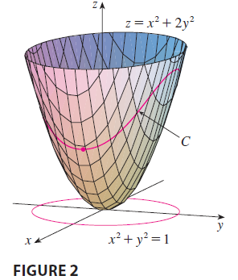

EXAMPLE 2 Find the extreme values of the function \(f(x, y) = x^2 + 2y^2\) on the circle \(x^2 + y^2 = 1\).

SOLUTION We are asked for the extreme values of \(f\) subject to the constraint \(g(x, y) = x^2 + y^2 = 1\). Using Lagrange multipliers, we solve the equations \(\nabla f = \lambda \nabla g\) and \(g(x, y) = 1\), which can be written as \[ f_x = \lambda g_x \quad f_y = \lambda g_y \quad g(x, y) = 1 \] or as \[ 2x = 2x\lambda \] \[ 4y = 2y\lambda \] \[ x^2 + y^2 = 1 \] From (9) we have \(x = 0\) or \(\lambda = 1\). If \(x = 0\), then (11) gives \(y = \pm 1\). If \(\lambda = 1\), then \(y = 0\) from (10), so then (11) gives \(x = \pm 1\). Therefore \(f\) has possible extreme values at the points \((0, 1), (0, -1), (1, 0),\) and \((-1, 0)\). Evaluating \(f\) at these four points, we find that \[ f(0, 1) = 2 \quad f(0, -1) = 2 \quad f(1, 0) = 1 \quad f(-1, 0) = 1 \] Therefore the maximum value of \(f\) on the circle \(x^2 + y^2 = 1\) is \(f(0, \pm 1) = 2\) and the minimum value is \(f(\pm 1, 0) = 1\).